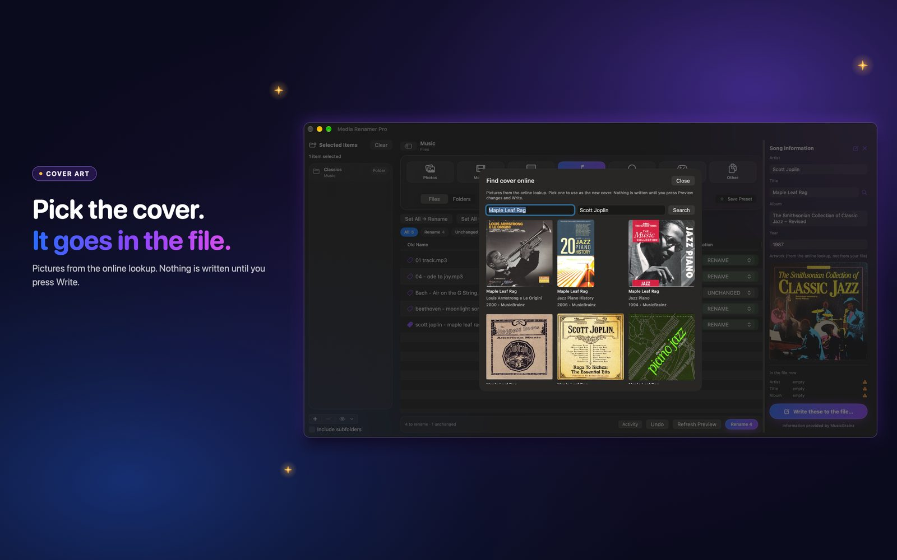

How to find cover art online and embed it in your files
Your album has no picture, or the wrong one. Find the right cover online, pick it, and it goes inside the file.
 By Buck Kettering· October 30, 2026· Applies to version 2.0
By Buck Kettering· October 30, 2026· Applies to version 2.0
Where the pictures come from
- Music: album art from the online music database and its cover archive.
- Movies and TV: posters from TMDb and TVmaze.
- Audiobooks: book covers from Google Books.
You see the pictures and you choose. Nothing is picked for you in the Edit tags panel.

Pick one and embed it
Open Edit tags on a file and press Find online under the cover. Click a picture. The panel shows it beside the fields, and Preview changes tells you what will be written. Then Write tags.
Media Renamer Pro embeds cover art inside the file's tags. It still never renames, moves or deletes poster or cover files that sit next to your media.
How the picture is prepared
- JPEG, PNG, HEIC and TIFF pictures are accepted.
- The smallest side is scaled down to 600 pixels at most. Pictures are never scaled up.
- A JPEG or PNG that already fits is kept exactly as it is.
- Pictures under 100 pixels, or still over 2 MB after scaling, are refused with a reason.
Where it goes in each file
| File | Where the cover is stored |
|---|---|
| MP3 | The front cover picture in the ID3 tag. Other pictures stay. |
| MP4, M4V, M4A, M4B | The cover item in the tag list |
| MKV, WebM | A cover attachment inside the file |
An MP3 tag cannot always grow in place. When there is not enough room, the app rewrites the tag area to make room, after copying the original so Undo can put it back. Files over 400 MB are not rewritten.
Good to know: Changing tags changes the file itself. Apps that watch files for changes (backup, sync, download or media-manager tools) may treat it as a new or changed file. Undo puts it back exactly.
When there is no picture online
Some albums and obscure titles have nothing to find. The picker shows only tiles that have a picture, so an empty grid means there is nothing there. You can still press Choose cover and pick a picture from your own disk.